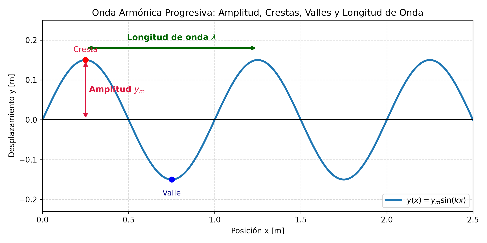
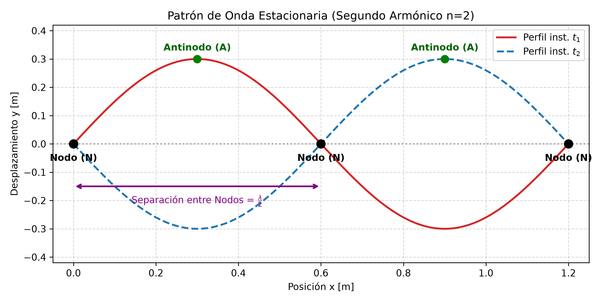

4.2 Ecuación de Onda, Velocidad Transversal e Interferencia
1. Función de Onda Armónica Progresiva
Una onda sinusoidal progresiva que se propaga en la dirección positiva del eje \(x\) se describe matemáticamente mediante la función de onda:
Donde: * \(y(x,t)\): Desplazamiento transversal del elemento del medio en la posición \(x\) y tiempo \(t\). * \(y_m\) (o \(A\)): Amplitud máxima del movimiento. * \((k x - \omega t - \phi)\): Fase de la onda. * \(\phi\): Constante de fase inicial (desplaza la onda en el espacio o en el tiempo).
Si la onda se propaga en la dirección negativa del eje \(x\), la ecuación toma la forma:
Parámetros Angulares
- Número de onda angular (\(k\)):
$\(k = \frac{2\pi}{\lambda} \quad \left[\frac{\text{rad}}{\text{m}}\right]\)$ - Frecuencia angular (\(\omega\)):
$\(\omega = \frac{2\pi}{T} = 2\pi f \quad \left[\frac{\text{rad}}{\text{s}}\right]\)$
2. Velocidad y Aceleración Transversal de las Partículas
Es fundamental distinguir entre la velocidad de la onda (\(v\)) y la velocidad transversal de una partícula del medio (\(u\)):
- Velocidad de propagación de la onda (Fase): Es la rapidez constante con la que avanza la perturbación a lo largo del eje \(x\):
$\(v = \frac{\omega}{k} = \lambda f \quad \left[\frac{\text{m}}{\text{s}}\right]\)$ - Velocidad transversal de la partícula (\(u\)): Derivada parcial de \(y(x,t)\) respecto al tiempo (manteniendo \(x\) constante):
$\(u(x,t) = \frac{\partial y}{\partial t} = -y_m \omega \cos(k x - \omega t - \phi)\)$
$\(u_{\text{máx}} = y_m \omega \quad \left[\frac{\text{m}}{\text{s}}\right]\)$ - Aceleración transversal de la partícula (\(a\)): Derivada parcial de \(u(x,t)\) respecto al tiempo:
$\(a(x,t) = \frac{\partial u}{\partial t} = \frac{\partial^2 y}{\partial t^2} = -y_m \omega^2 \sin(k x - \omega t - \phi) = -\omega^2 y(x,t)\)$
$\(a_{\text{máx}} = y_m \omega^2 \quad \left[\frac{\text{m}}{\text{s}^2}\right]\)$
Diferencia Crítica de Examen:
La velocidad de la onda \(v\) es constante en un medio homogéneo. En cambio, la velocidad transversal \(u\) varía de forma armónica entre \(+u_{\text{máx}}\) y \(-u_{\text{máx}}\). \(u\) es máxima cuando el elemento pasa por el equilibrio (\(y = 0\)), mientras que la aceleración \(a\) es máxima en las crestas y valles (\(y = \pm y_m\)).
3. Rapidez de Onda en Cuerdas Estiradas
La rapidez de una onda mecánica transversal en una cuerda depende exclusivamente de las propiedades de tensión e inercia del medio:
Donde: * \(F\): Tensión aplicada a la cuerda \([\text{N}]\). * \(\mu\): Densidad lineal de masa \([\text{kg/m}]\), definida como \(\mu = \frac{m}{L}\).
4. Superposición e Interferencia de Ondas
Cuando dos ondas mecánicas de igual amplitud y frecuencia se propagan en el mismo sentido por el mismo medio con una diferencia de fase \(\Delta\phi\), la onda resultante es:
- Interferencia Constructiva Total: Ocurre cuando \(\Delta\phi = 0, 2\pi, 4\pi, \dots\) (\(2n\pi\)). La amplitud se duplica: \(A_{\text{res}} = 2 y_m\).
- Interferencia Destructiva Total: Ocurre cuando \(\Delta\phi = \pi, 3\pi, 5\pi, \dots\) (\((2n+1)\pi\)). La amplitud resultante es nula: \(A_{\text{res}} = 0\).
5. Ondas Estacionarias en Cuerdas Fijadas
La superposición de dos ondas identicas viajando en sentidos opuestos genera una onda estacionaria:
- Nodos (\(y = 0\)): Puntos donde la amplitud es cero en todo instante. Ocurren en \(x = n \frac{\lambda}{2}\) para \(n = 0, 1, 2, \dots\).
- Antinodos (\(y = \pm 2y_m\)): Puntos de amplitud máxima. Ocurren en \(x = \left(n + \frac{1}{2}\right) \frac{\lambda}{2}\).
- Frecuencias Permitidas (Armónicos): En una cuerda de longitud \(L\) con ambos extremos fijos:
$\(f_n = n \left(\frac{v}{2L}\right) = \frac{n}{2L} \sqrt{\frac{F}{\mu}} \quad (n = 1, 2, 3, \dots)\)$
6. Detector de Trampas de Parcial
| La Trampa del Profesor | El Error Típico | La Verdad Física |
|---|---|---|
| Confundir \(v\) con \(u\): Usar \(v = \lambda f\) para calcular la velocidad de la partícula. | Mezclar la rapidez del perfil con el movimiento de la partícula. | \(v\) es la rapidez horizontal de la onda; \(u = \frac{\partial y}{\partial t}\) es la velocidad de oscilación vertical del medio. |
| Paso de Fase a Seno/Ceno: Olvidar que \(\sin(x + \pi/2) = \cos(x)\). | Errores en la constante de fase al pasar de coseno a seno. | Evaluar siempre la condición en \(t=0, x=0\) para determinar \(\phi\). |
| Distancia entre Nodos: Asumir que la distancia entre nodos consecutivos es \(\lambda\). | Olvidar dividir la longitud de onda por 2. | La distancia entre dos nodos adyacentes es \(\frac{\lambda}{2}\). |
7. Esquemas Gráficos


8. Ejercicios Resueltos con Análisis Dimensional Explícito
Ejercicio 1: Determinación Completa de la Función de Onda
Consigna: Una onda sinusoidal progresiva en la dirección \(+x\) tiene una amplitud de \(y_m = 0.15 \text{ m}\), longitud de onda de \(\lambda = 0.40 \text{ m}\) y frecuencia \(f = 8.00 \text{ Hz}\). En \(t = 0\) y \(x = 0\), el desplazamiento es \(y(0,0) = 0.15 \text{ m}\).
a) Calcule \(k\), \(T\), \(\omega\) y \(v\).
b) Determine \(\phi\) y la ecuación general \(y(x,t)\).
c) Calcule la velocidad transversal máxima \(u_{\text{máx}}\) de una partícula del medio.
Desarrollo y Cancelación de Unidades:
Paso a): Cálculo de constantes cinemáticas
-
Número de onda (\(k\)):
$\(k = \frac{2\pi}{\lambda} = \frac{2\pi \text{ rad}}{0.40 \text{ m}} = 15.708 \text{ rad/m} \approx 15.71 \text{ rad/m}\)$
$\(\text{[Unidades]} = \frac{[\text{rad}]}{[\text{m}]} = \text{m}^{-1}\)$ -
Período (\(T\)):
$\(T = \frac{1}{f} = \frac{1}{8.00 \text{ s}^{-1}} = 0.125 \text{ s}\)$
$\(\text{[Unidades]} = \frac{1}{\left[\frac{1}{\text{s}}\right]} = \text{s}\)$ -
Frecuencia angular (\(\omega\)):
$\(\omega = 2\pi f = 2\pi \cdot (8.00 \text{ s}^{-1}) = 50.265 \text{ rad/s} \approx 50.27 \text{ rad/s}\)$
$\(\text{[Unidades]} = [\text{rad}] \cdot \left[\frac{1}{\text{s}}\right] = \text{s}^{-1}\)$ -
Velocidad de fase (\(v\)):
$\(v = \lambda f = (0.40 \text{ m}) \cdot (8.00 \text{ s}^{-1}) = 3.20 \text{ m/s}\)$
$\(\text{[Unidades]} = [\text{m}] \cdot \left[\frac{1}{\text{s}}\right] = \frac{\text{m}}{\text{s}}\)$
Paso b): Constante de fase (\(\phi\)) y función de onda
Sustituyendo \(x=0\), \(t=0\) e \(y=0.15 \text{ m}\) en \(y(x,t) = y_m \sin(kx - \omega t + \phi_0)\):
Recordando que \(\sin\left(\theta + \frac{\pi}{2}\right) = \cos(\theta)\), la función de onda resulta:
Paso c): Velocidad transversal máxima (\(u_{\text{máx}}\))
Ejercicio 2: Tensión en Cuerda y Modos Armónicos Estacionarios
Consigna: Una cuerda de guitarra de longitud \(L = 0.65 \text{ m}\) y masa \(m = 3.25 \text{ g}\) está sujeta por ambos extremos. Se desea fijar una tensión \(F\) tal que su frecuencia fundamental (\(n=1\)) sea de \(f_1 = 440 \text{ Hz}\) (Nota LA4).
a) Calcule la densidad lineal de masa \(\mu\).
b) Determine la rapidez \(v\) de la onda en la cuerda.
c) Calcule la tensión \(F\) requerida en Newtons.
Desarrollo y Cancelación de Unidades:
Paso a): Densidad lineal de masa (\(\mu\))
Convertimos masa a kg: \(m = 3.25 \text{ g} = 3.25 \times 10^{-3} \text{ kg}\).
Paso b): Rapidez de la onda (\(v\))
Para el modo fundamental (\(n=1\)), \(L = \frac{\lambda_1}{2} \implies \lambda_1 = 2L = 2 \cdot (0.65 \text{ m}) = 1.30 \text{ m}\).
Paso c): Tensión \(F\) requerida
Despejando \(F\) de \(v = \sqrt{\frac{F}{\mu}}\):
Sustituyendo valores y unidades:
Desglose dimensional de unidades:
9. Mapa Conceptual
(Nota: Este bloque de diagramación Mermaid debe ubicarse al final de este apunte).
graph TD
A[Ondas en Cuerdas y Medios] --> B[Onda Viajera Armónica]
A --> C[Propiedades Mecánicas del Medio]
A --> D[Superposición e Interferencia]
B --> B1["Función: y = y_m sin(kx - ωt)"]
B --> B2["Velocidad Transversal: u = ∂y/∂t"]
B --> B3["Velocidad de Onda: v = ω/k = λf"]
C --> C1["Tensión F y Densidad Linear μ"]
C --> C2["Rapidez v = √(F/μ)"]
D --> D1["Mismo Sentido: Interferencia Constructiva/Destructiva"]
D --> D2["Sentidos Opuestos: Onda Estacionaria"]
D2 --> D3["Patrón de Nodos y Antinodos"]
D3 --> D4["Armónicos: f_n = n*(v / 2L)"]